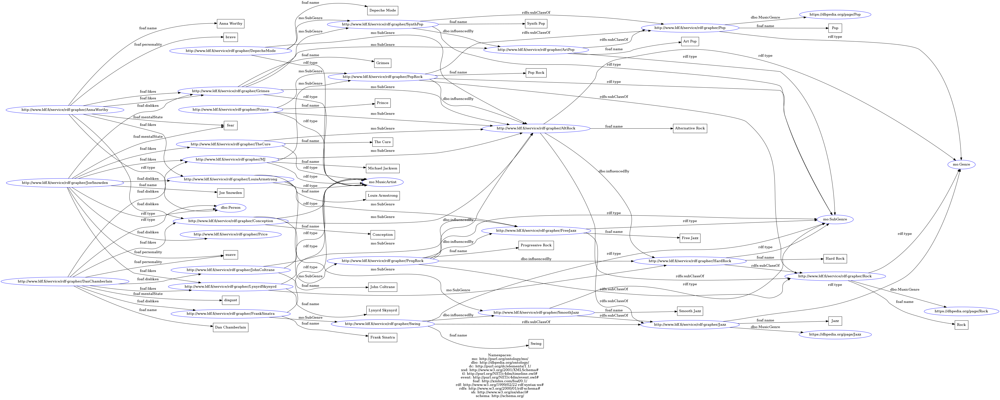

Members:
- Marian-Sergiu Nistor (MSD1)
- Andrei Ghiran (MSD1)
Contributions:
- Marian-Sergiu Nistor: Exercise 1 - RDF model which describes 4 distinct entities (People, Genres, SubGenres, Artists). Each person eiter likes or dislikes an artist, based on its
personality type and emotional state. An artist can be part of one or more subgenres, while each subgenre can be a subclass of a bigger genre. The technologies used are comprised
of RDS (Turtle syntax) for mapping the entities and their relationships, SHACL for imposing constraints over the entities. The model makes use of DBO (DBpedia Ontology),
MO (Music Ontology) and FOAF (Friend-of-a-Friend). The imposed constraints can be found in Exercise1/schema.rdf. The ontology is situatied in Exercise1/ontology.rdf.
The visual representation of the ontology is represented in Exercise1/graph.png.
- Andrei Ghiran: Exercise 2 - successfuly wrote SPARQL queries coresponding to a)
Exercise 1

Exercise 2 (the file containing the SPAQL queries can be found in the Exercise2 folder)
The amazing Progressive Rock and Post-Rock, 🇬🇧 and 🇺🇸 guitar players and keyboardists born between 1940 and 1990
 Progressive Rock or Post-Rock music albums by Icelandic or Finish groups.png
Progressive Rock or Post-Rock music albums by Icelandic or Finish groups.png